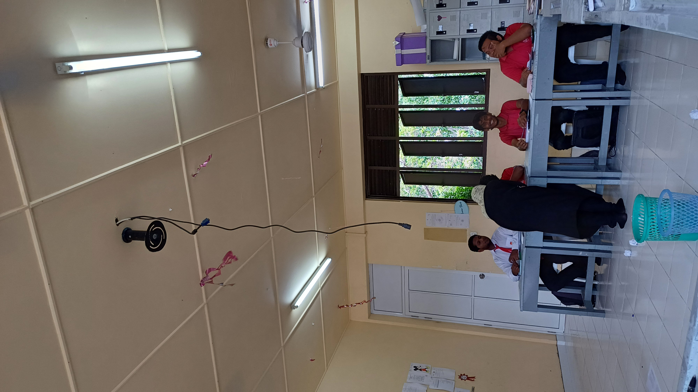

Aahil tried serving a paper ball to amin during physics gadi, the place was simple, aahil serves and amin smashes. It did not go according to plan.
It hit the projector area (by a horse hair, like barely) and then the vaagandu just falls down.
Aisthu miss was very focused on explaining something to aiman, so thankfully she didn't notice. But she was definitely lost when she turnt around and saw amin standing and walking and stuff, which a giant vaagandu hanging down from the ceiling.